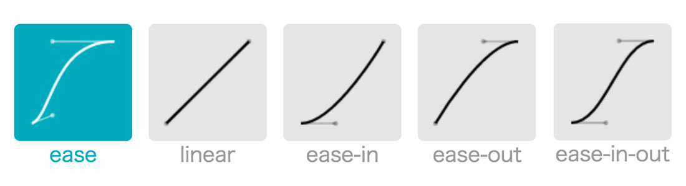
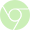
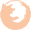
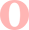
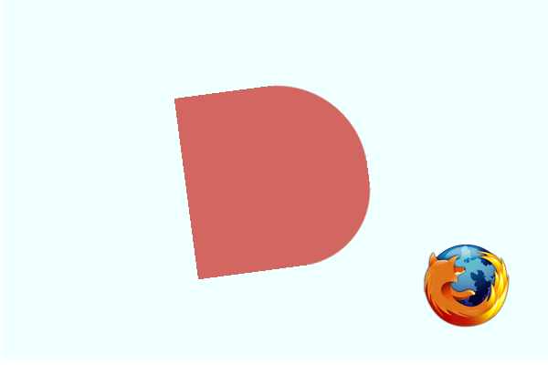

Animation 활용
애니메이션 활용하기
CSS 애니메이션을 만드려면 animation 속성과 그 속성의 하위 속성을 지정해야 하며, 애니메이션의 총 시간과 반복 여부등을 지정할 수 있습니다.
애니메이션에서는 중간 상태를 표현 할 수 없어 아래에서 다룰 @keyframes 규칙을 이용하여 표현합니다.
애니메이션에서는 중간 상태를 표현 할 수 없어 아래에서 다룰 @keyframes 규칙을 이용하여 표현합니다.
Animation 와 @keyframes
CSS 애니메이션에서 가장 중요한 요소는 @keyframes 입니다.
@keyframes은 CSS 문법 중 하나로 애니메이션이 만들어지는 부분입니다. @keyframes 을 타임라인 안의 하나의 스테이지(구간)들 이라고 생각하고, @keyframes 안에서 우리는 스테이지들을 정의하고 각 구간마다 다른 스타일을 적용 시킬 수 있습니다.
@keyframes은 CSS 문법 중 하나로 애니메이션이 만들어지는 부분입니다. @keyframes 을 타임라인 안의 하나의 스테이지(구간)들 이라고 생각하고, @keyframes 안에서 우리는 스테이지들을 정의하고 각 구간마다 다른 스타일을 적용 시킬 수 있습니다.
Animation 속성
- animation-name: @keyframes 이름
- animation-duration: 타임프레임 길이. 애니메이션 시작부터 마지막까지 총 지속시간
- animation-timing-function: 애니메이션 속도 조절 ( linear | ease | ease-in | ease-out | ease-in-out | cubic-bezier )
- animation-delay: 애니메이션이 시작하기 전 지연시간
- animation-iteration-count: 반복 횟수
- animation-direction: 루프 (loop) 방향. 정방향으로 반복, 역방향으로 반복, 번갈아가며 반복 등을 설정
단축형
animation: name | duration | timing-function | delay | iteration-count | direction
@keyframes
@keyframes pulse {
0% {
opacity: 1;
}
100% {
opacity: 0;
}
}
@keyframes pulse {
from {
opacity: 1;
}
to {
opacity: 0;
}
}
@keyframes pulse {
to {
opacity: 0;
}
}
위의 세가지 방법 모두 동일한 결과로 나옵니다.
애니메이션 적용하기
.element {
width: 200px;
height: 200px;
background-color: red;
animation:
pulse 3s ease infinite alternate
}
@keyframes pulse {
0%, 100% {
background-color: red;
}
25% {
background-color: orange;
}
50% {
background-color: yellow;
}
75% {
background-color: pink;
}
}
여러개의 Animation
복수의 애니메이션을 추가하려면 쉼표를 사용하여 분리하면 되고, 예를들어 아까 만든 pulse에 변형시키고 싶으면 @keyframes를 하나 더 선언하고 element에도 쉼표를 사용하여 추가로 묶어줍니다.
.element {
width: 200px;
height: 200px;
background-color: red;
animation:
pulse 3s ease infinite alternate,
nudge 3s linear infinite alternate;
animation-play-state: paused;
}
.box1:hover {
animation-play-state: running;
}
@keyframes nudge{
0%, 100% {
border-radius:0 0 0 0;
transform: translate(-150px, 0);
}
25%, 75% {
border-radius:0 50%;
transform: translate(0, 150px);
}
50% {
border-radius:100%;
transform: translate(150px, 0);
}
}
Timing-Function 기능 이용하기
사용자가 직접 커브를 조절해서 디테일한 애니메이션을 만들 수 있는데, 아주 자세한 값이 필요하여 수동으로 직접 계산하기 보다는 많은 무료 리소스 웹사이트를 사용하여 커스텀된 애니메이션 타이밍 기능을 사용하는 것이 안정적입니다.

| 속성 | 값 |
|---|---|
| ease | 기본값입니다. 처음과 끝이 부드러워 일반적으로 이 속성을 사용하면 대부분의 움직임이 자연스러움을 갖습니다. |
| linear | 모든 속도가 같은 등속 운동입니다. |
| ease-in | 느리게 시작한 후 일정한 속도에 다다르면 그 상태로 등속 운동합니다. |
| ease-out | 일정한 속도의 등속으로 시작해서 점점 느려지면서 끝납니다. |
| ease-in-out | ease와 비슷합니다. 느리게 시작하여 느리게 끝납니다. |
| cubic-bezier(n,n,n,n) | 처음과 끝의 속도를 0과 1 사이의 수치를 이용하여 4단계로 지정할 수 있습니다. 베지어(Bezier)라는 곡선 운동을 정의합니다. |
3차 베지어 곡선

3차 베지어 곡선은 그리드상에 존재하는 4개의 점으로 만들어지며, 두 축을 따라 0부터 1까지의 좌표를 지닙니다.
여기서 4개의 점은 p0, p1, p2, p3 로 부르는데, 이 점은 두 쌍의 (x, y) 좌표로 표시되고, 그 위치에 따라 곡선의 굽음의 정도(곡률)를 나타낼 수 있습니다.
이때 첫 번째 점(p0)은 (0,0) 마지막 점(p3)은 (1, 1)이고 p1인 (x1, y1)과 p2 (x1, y1) 인 다른 2개의 점을 함수에 정의합니다.
p0, p3 는 항상 같은 값을 의미하므로 별도로 지정하지 않아도 됩니다.
http://easings.net/ko
http://matthewlein.com/ceaser/
여기서 4개의 점은 p0, p1, p2, p3 로 부르는데, 이 점은 두 쌍의 (x, y) 좌표로 표시되고, 그 위치에 따라 곡선의 굽음의 정도(곡률)를 나타낼 수 있습니다.
이때 첫 번째 점(p0)은 (0,0) 마지막 점(p3)은 (1, 1)이고 p1인 (x1, y1)과 p2 (x1, y1) 인 다른 2개의 점을 함수에 정의합니다.
p0, p3 는 항상 같은 값을 의미하므로 별도로 지정하지 않아도 됩니다.
http://easings.net/ko
http://matthewlein.com/ceaser/
transition
- Animation vs Transition 차이점??
-
transition 속성은 그 자체로도 애니메이션 효과를 가지고는 있지만,
transition은 animation 속성보다는 제한적인 기능을 가지고 있습니다. 그래서 하나의 줄거리를 이루기 위한 애니메이션 보다는 특정 객체를 부각시키는 인스턴트적인 상황이나 화면 전환에 더 적합합니다.
transition
:hover 같은 마우스 사용시, 또는 클래스를 넣고 빼는 등의 동작에 의해서 동작한다.
물론 엘리먼트의 인라인 스타일을 변경해서도 동작하게 할 수 있다.
animation
animation은 시작하기 위해 별도의 설정이 필요없다.
한 번 정의하면 자동으로 시작한다.
애니메이션은 `animation-iteration-count` 속성으로 쉽게 반복할 수 있다.
애니메이션은 키프레임을 지정할 수 있다.
애니메이션 효과를 가지고 있는 transition
예를들어, 객체의 모양을 왜곡시킨다던가 혹은, 같은 동작을 무한 반복시키는 기능(Film Loop)은 없습니다.
transition은 객체가 기존에 가지고 있던 속성의 값이 다른 값으로 변할 때만 표현됩니다.
transition은 객체가 기존에 가지고 있던 속성의 값이 다른 값으로 변할 때만 표현됩니다.
- transition-property: 애니메이션이 적용될 속성 (width, height, background-color 등) (none | all | property)
- transition-duration: 애니메이션 지속 시간 (0.4s 는 0.4초를 의미). 항상 지정해줘야함 그렇지 않을경우 기본값(0s)으로 인해 효과 없음
- transition-timing-function: 가속곡선 (liniar | ease | ease-in | ease-out | ease-in-out 등)
- transition-delay: 애니메이션이 시작되기 전 딜레이
단축형
transition: property | duration | timing-function | delay
단축형 사용시 property 딱 1개만 적을 수 있습니다. 1개의 속성 이름만 적어주든지, 아니면 all을 써서 모든 속성을 변경시키는 값을 써야합니다.
발동조건
transition은 페이지가 로드되면서 자동으로 시작되지 않습니다.
:hover와 같은 가상 클래스 선택자(Pseudo-Classes) 혹은, 자바스크립트의 onclick 이벤트의 부수적인 액션에 의해 발동합니다. 그리고 마우스가 올라갔을 때에는 어떤 속성으로 변할 것인지 정의해 주어야 합니다.
:hover와 같은 가상 클래스 선택자(Pseudo-Classes) 혹은, 자바스크립트의 onclick 이벤트의 부수적인 액션에 의해 발동합니다. 그리고 마우스가 올라갔을 때에는 어떤 속성으로 변할 것인지 정의해 주어야 합니다.
확장 단축형
div {
transition: background 2s ease 1s,
padding 1s linear 2s;
}
transition 장점은 각 속성별로 지연시간이나 다른 값을 따로 두어 독립적인 움직임을 줄 수 있습니다.
반면, 변경할 속성은 많은데 그 외에 사용하는 값들은 대체적으로 공통된 경우, 동일한 값을 계속 써주는 비능률적인 상황이 발생할 수 있습니다.
반면, 변경할 속성은 많은데 그 외에 사용하는 값들은 대체적으로 공통된 경우, 동일한 값을 계속 써주는 비능률적인 상황이 발생할 수 있습니다.
브라우저 호환성
|  |  |  | ||
|---|---|---|---|---|
| 지원 | 10 | 지원 | 지원 | 지원 |
| -webkit- | -ms- | -moz- | -webkit- | -o- |
버그 - 파이어폭스
최신 브라우저들에서는 모두 잘 작동하지만, 파이어폭스에서는 변형하는 오브젝트를 아래 그림과 같이 삐죽삐죽한 라인처리를 합니다.
해결방안: outline: 1px solid transparent;

Transform
2D Transform + 3D Transform
| 메소드 | 설명 |
|---|---|
| translate3d(x,y,z) | 객체의 위치를 가로(x), 세로(y), 깊이(z) 방향으로 정의하여 이동시킵니다. 단위로는 px, %, em 따위를 사용할 수 있습니다. 예를들어, translate(60px, 60px, 60px)은 객체를 우측으로 60px, 하단으로 60px, 그리고 사용자와 60px만큼 가까운 위치로 이동시킵니다. 또한, 양수와 음수를 사용할 수 있습니다. |
| translateX(n) | 객체의 위치를 가로 방향으로만 이동시킵니다. translateX(100px)은 우측으로 100px만큼 이동합니다. -100px과 같이 음수로 기재하면 반대방향인 좌측으로 100px만큼 이동합니다. |
| translateY(n) | 객체의 위치를 세로 방향으로만 이동시킵니다. -100px과 같이 음수로 기재하면 반대방향인 상단으로 100px만큼 이동합니다. |
| scale3d(x,y,z) | 객체의 세 방향을 한번에 늘이거나 줄일 수 입니다. |
| scaleX(n) | 객체를 x축 중심으로 늘이거나 줄입니다. |
| scaleY(n) | 객체를 y축 중심으로 늘이거나 줄입니다. |
| scaleZ(n) | 객체를 z축 중심으로 늘이거나 줄입니다. CSS에는 두께라는 개념이 없습니다. |
| rotate3d(x,y,z) | 객체의 세 방향을 한번에 회전 시킵니다. |
| rotateX(n) | X축을 중심으로 객체를 회전시킵니다. |
| rotateY(n) | Y축을 중심으로 객체를 회전시킵니다. |
| rotateZ(n) | 2D Transform의 Rotate와 동일합니다. |
| perspective(n) | 객체를 바라보는 원근을 입니다. 화면을 바라보는 사용자로부터 얼마나 멀리에 위치하는가를 나타냅니다. px을 사용하며, 수치가 낮을수록 가깝기 때문에 왜곡도 심하게 일어납니다. |
| matrix3d(nx16) | 모든 값을 한번에 지정할 수 있고 16개의 값이 존재합니다. |